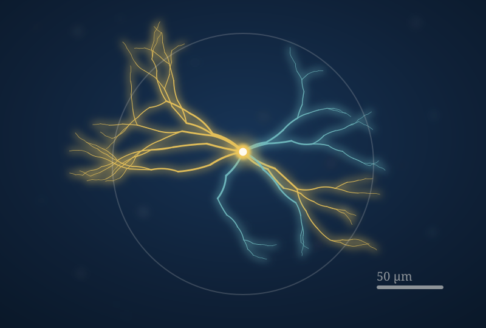

Designing experiments
Take a specific fly line and turn a hunch about it into a testable prediction and a plan you can run in a semester.
Students + Teaching
You don't have to be a senior with lab experience to do research here. In my courses and in the lab, students take on real projects and make the calls about where they go next.

BIOL 202
BIOL 202 is a course-based research experience, which means the whole class works on a real, open question from my lab: what do specific descending neurons do to the way a larva moves? Students target individual neurons using split-GAL4 fly lines, switch them on with light using optogenetics, and measure how crawling changes against controls. Because most of these neurons haven't been characterized, the answers are genuinely new.
It isn't a simulation of research. Some of what the class turns up ends up feeding back into the lab's own work.
What students practice
Take a specific fly line and turn a hunch about it into a testable prediction and a plan you can run in a semester.
Use controls, deal with the variability in behavior data, and judge what a messy result actually supports.
Follow a single gene or neuron up through a circuit to the movement of the whole animal.
Turn your data into a clear figure and a poster you could defend to another scientist.
Mentorship
I give direct, specific feedback, and I expect a lot, while also expecting it to take time to get there. The goal is for you to leave more independent than you arrived: able to run your own experiments, defend your own conclusions, and work well with the people around you.